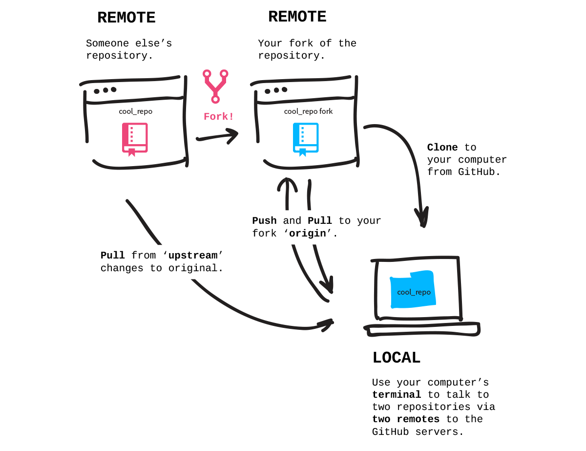

關卡內容：
從 GitHub.com 建立專案 fork，並 clone 到電腦上。
Forks
你已經在電腦上建立了一個專案並且 push 到 GitHub 上，但有趣的不僅如此，更重要的是與人們在不同的專案中合作。
當你 fork 一個 repository 時，實際上是在自己的 GitHub 帳號下建立了一份複本。你的 fork 成為了一個 remote repository。針對專案的 forks 通常被用來建立自己的版本，或是協助修正錯誤、新增功能到原始專案。
當專案被 forked 之後，你便可以從 GitHub clone（aka 複製)到電腦上，以便離線修改。

步驟：Fork Patchwork Repository
我們接下來要使用的專案是github.com/jlord/patchwork。到頁面上點擊右上方的 fork 按鈕，當 fork 動畫完成時，你便在你的帳號下得到了一份複本，複製在你的 fork 畫面右邊側欄的 HTTP 網址。
步驟：在電腦上Clone Fork
現在，在終端機 clone repository 到你的電腦上，他會自動替 repository 建立一個新的資料夾，所以你不需要自己建立一個。但請注意不要在另一個 Git repository 資料夾中 clone！所以，如果你還在先前挑戰所使用的 'hello-world' repository 中，請先離開那個資料夾。你可以透過切換資料夾指令以及兩個點來切換到目前的資料夾外：
$ cd ..
然後 clone：
$ git clone <URLFROMGITHUB>
切換到方才自動建立的 fork 資料夾（在這個例子中叫做 'patchwork'）：
$ cd patchwork
現在你已經在電腦上得到了一份 `repository` 的副本，並且被自動連接到你 GitHub 帳號下的remote repository （你的 fork 副本）。
步驟：連結到原始的 Repository
但如果先前你 forked 的 repository 內容有改變了呢？你會希望能夠 pull 這些變更。所以讓我們來新增另外一個 remote連結到原始的專案 github.com/jlord/patchwork， repository 的 URL 可以在 GitHub 原始專案的側邊欄下方找到。
你可以隨意替這個 remote 連結命名，但大家通常用 'upstream'，讓我們也用這個名字：
$ git remote add upstream https://github.com/jlord/patchwork.git
確認你完成了所有的步驟：
git-it verify
前往下一個關卡
git-it
撇步
- 新增遠端連結
$ git remote add <REMOTENAME> <URL>- 檢視遠端連結
$ git remote -v